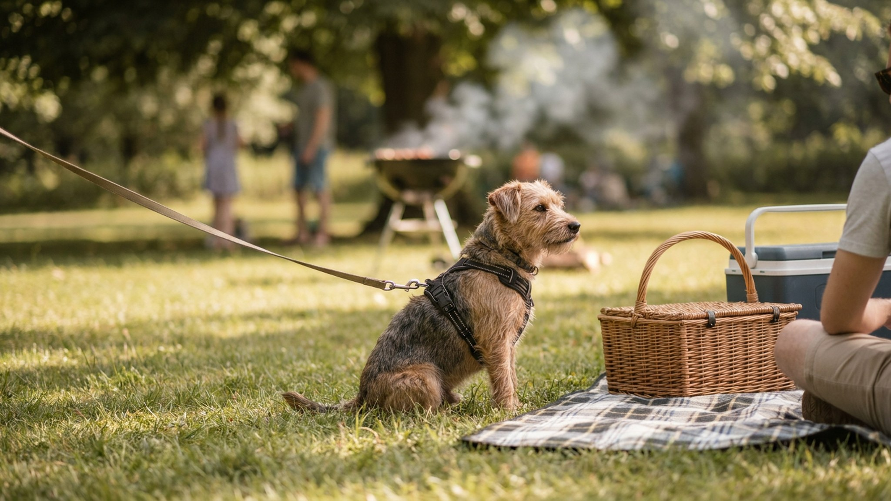

Шашлык и пикник с питомцем: что точно нельзя со стола, как организовать тень и воду

6 июня 2026 · 8 минут чтения · Лето · Быт · Питомцы
Взять питомца на дачный шашлык или воскресный пикник — хорошая идея, если подготовиться заранее. Большинство проблем на природе происходит не от злого умысла, а от «ну немного можно» и «жара сегодня несильная». Несколько простых правил сделают праздник безопасным для всей компании, включая четвероногих.
🐾 Дневник здоровья питомца — в кармане
Вес, прививки, симптомы и напоминания в одном приложении. AnimaLife следит за здоровьем питомца вместо вас.
Завести дневник → Открыть в MAX →
Продукты со стола, которые питомцу не нужны
На пикнике всегда много еды, и гости часто угощают питомца, не задумываясь. Объясните всем заранее — что давать не нужно.
- Лук, чеснок, любые луковые: в любом виде, включая маринады и соусы. Кошки особенно чувствительны.
- Виноград и изюм: у собак это связано с нагрузкой на почки — лучше не давать совсем.
- Косточки от мяса: варёные и жаренные кости становятся хрупкими и расщепляются на острые осколки. Сырые крупные — под наблюдением и только специально предназначенные.
- Жирное жареное мясо и кожа: поджелудочная железа собак и кошек плохо справляется с резкой нагрузкой жиром. Небольшой кусок постного мяса — можно, жирный маринованный шашлык с корочкой — нет.
- Алкоголь любой: для питомца это серьёзная нагрузка даже в малом количестве.
- Шоколад, кофе, чай: на пикниках бывают сладкие угощения — убирайте подальше.
- Маринованные и солёные блюда, соусы, специи: острое, кислое, перчёное — не для питомцев.
Простое правило для гостей: «если хотите угостить — спросите хозяина». Это снимает большую часть рисков.
Как организовать тень для питомца
Это важнее еды. Перегрев у собак и кошек развивается быстро, особенно в жаркий летний день без ветра.
- Заранее найдите или создайте теневое место — дерево, навес, тент, машина (с открытыми окнами и только если едете и сразу выходите, не оставляйте питомца в закрытой машине).
- Подстилка или коврик в тени — питомцу нужно куда лечь. Горячая земля или асфальт накапливают тепло хуже, чем трава, но трава тоже греется. Подстилка изолирует.
- Периодически смачивайте питомцу лапы, живот, уши — это помогает охладиться.
- Не давайте активно двигаться в самое жаркое время (12-16 часов). Прогулки и игры — утром или вечером.
Вода: сколько, какая, как
- Берите с собой воды в 2 раза больше, чем думаете — и для людей, и для питомца.
- Миска или поилка для питомца — отдельная, чистая, в тени.
- Меняйте воду каждые 2-3 часа — на жаре она нагревается и покрывается пылью.
- Не давайте пить из стоячих водоёмов, луж, рек с заметным течением — это отдельная тема, уточните у ветеринара допустимые водоёмы для вашего региона.
- Кошки пьют мало, но в жару им тоже нужна вода рядом — не ждите, пока попросит.
Что взять с собой на пикник
- Поводок и ошейник — даже если собака хорошо знает команды. Незнакомое место, много людей, посторонние запахи — риск убежать выше обычного.
- Документы питомца (ветпаспорт) — при путешествии за город это полезная привычка.
- Контакт ближайшей ветеринарной клиники в районе поездки.
- Защита от клещей и комаров — обработку делают заранее, по рекомендации ветеринара.
- Тарелка, вода, небольшой запас корма или лакомств питомца.
- Влажные салфетки для лап и мордочки.
На что обратить внимание во время пикника
Наблюдение — главный инструмент хозяина на природе. Признаки, при которых нужно перейти в тень, дать воды и следить внимательнее:
- Тяжёлое учащённое дыхание с открытым ртом (особенно у кошек — они так дышат редко).
- Вялость, нежелание двигаться.
- Слюнотечение сильнее обычного.
- Тёмно-красные или бледные дёсны.
Если после перехода в тень и воды состояние не улучшается за 10-15 минут — обратитесь к ветеринару. Не ждите «само пройдёт».
Мангал и открытый огонь
Мангал, костёр, горячая решётка — всё это нужно держать вне досягаемости питомца. Собаки и кошки нередко подходят слишком близко, привлечённые запахом еды. Поставьте мангал так, чтобы между ним и зоной питомца было расстояние, и следите во время жарки.
Горячий жир с мангала может капать и брызгать — убедитесь, что питомец не лежит рядом.
Поводок и безопасность на природе
Пикник в незнакомом месте — повышенный риск побега. Незнакомые запахи, другие собаки, люди, велосипедисты — всё это может вызвать неожиданную реакцию даже у хорошо обученной собаки.
- Поводок обязателен в незнакомом месте, в зонах с людьми и другими животными.
- Даже если парк или поляна выглядят «пустыми» — лес рядом, дорога рядом. Прежде чем отпускать, убедитесь в безопасности периметра.
- Метка и чип актуальны — на природе собаки теряются чаще, чем в городе.
- Для кошек пикник в открытом месте — серьёзный стресс. Большинство кошек комфортнее на огороженной даче, а не на открытом пикнике.
Чек-лист для пикника с питомцем
Короткий список, который помогает ничего не забыть:
- Поводок и ошейник/шлейка.
- Вода (с запасом) и миска.
- Еда питомца, если пикник на весь день.
- Тень или тент.
- Подстилка в тени.
- Влажные салфетки.
- Контакт ближайшей ветеринарной клиники.
- Ветпаспорт при поездке за город.
Хорошо подготовленный пикник — это удовольствие для всех. Питомец, которому комфортно, не мешает людям и не портит настроение компании.
Материал носит информационный характер и не заменяет очную консультацию ветеринара.
← Все статьи · Открыть AnimaLife в Telegram · RSS